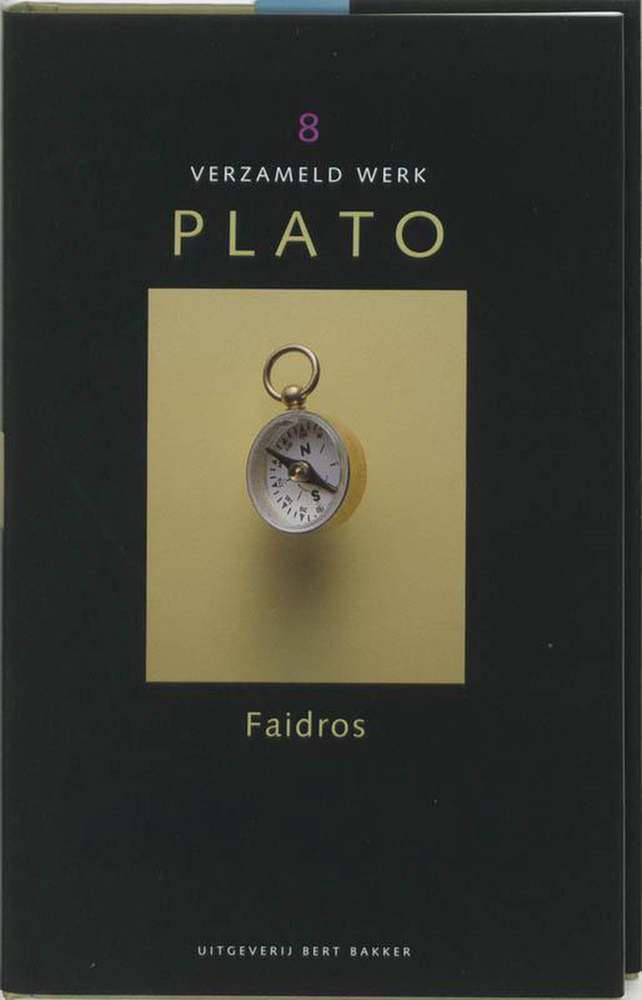

Filosofiecursussen in Oudewater |
||
Najaar 2023 |
||
|
 |
Plato: liefde en redeWat heeft ons vermogen om verliefd te zijn te maken met ons vermogen om te spreken en te schrijven? In de dialoog Faidros van Plato zijn beide onderwerpen aan de orde: eros (verliefdheid) en logos (spraak, rede). Maar op het eerste gezicht worden deze twee onderwerpen helemaal los van elkaar behandeld. De eerste helft van de dialoog, een gesprek tussen Sokrates en Faidros, bevat drie redes over eros: een rede van Lysias, voorgelezen door Faidros, en twee redes van Sokrates. En de leidende vraag is: is de vriendschap van iemand die verliefd op je is schadelijk, of het beste dat je kan overkomen? In de tweede helft van de dialoog verschuift het onderwerp opeens: de vraag wordt dan wat een rede eigenlijk tot een goede of een slechte rede maakt. Hoe spreek en schrijf je goed, en hoe niet? De gesprekspartners lijken zo gaandeweg het onderwerp eros uit het oog te verliezen. Maar dat is slechts schijn: het begrijpen van wat verliefdheid is blijkt een voorbereiding op het begrijpen van wat spreken en schrijven is. Tijdens de cursus zal aan de hand van de tekst deze samenhang tussen eros en logos besproken worden. Praktische informatie
Voorbereiding:
Data:
Tijd:
Locatie:
Kosten:
Cursusmateriaal: De deelnemers dienen de tekst zelf aan te schaffen. Er zijn meerdere Nederlandse vertalingen uitgegeven, waaronder:
Docent: AanmeldenInteresse? Stuur een e-mail naar filosofie-oudewater@proton.me. |
|
filosofie-oudewater.github.io |